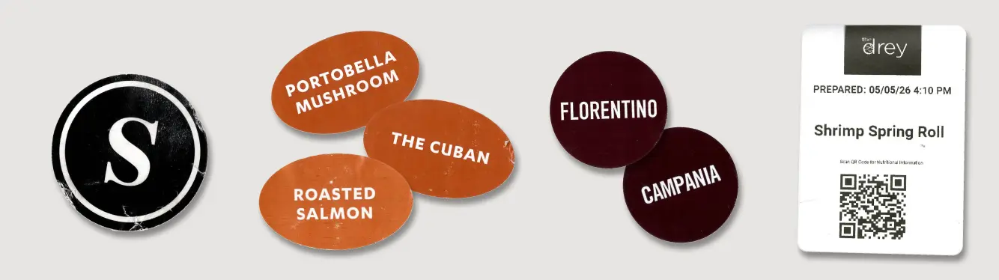
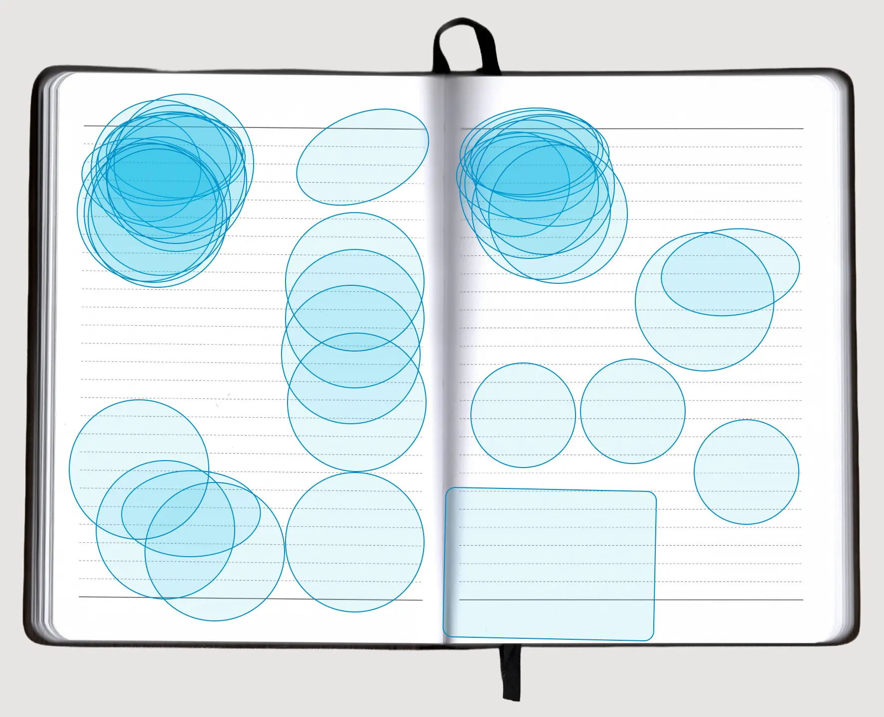
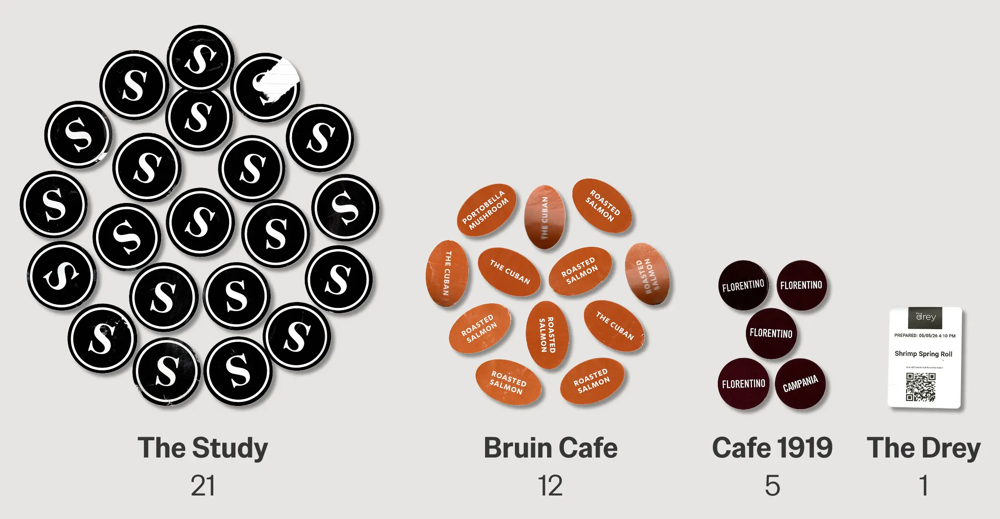
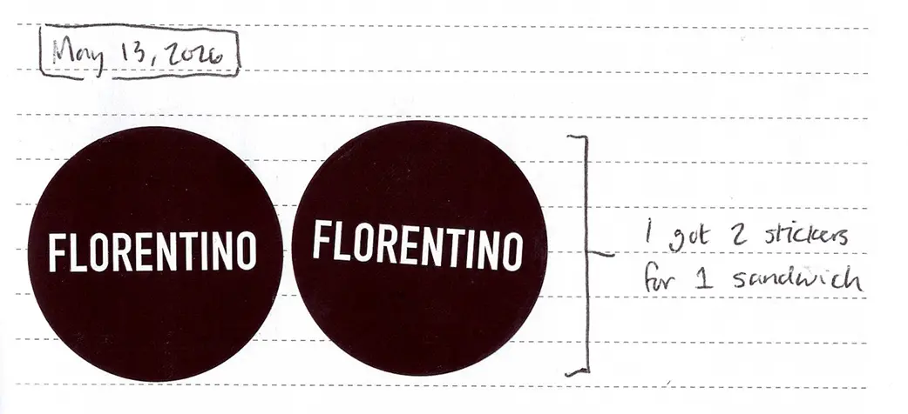
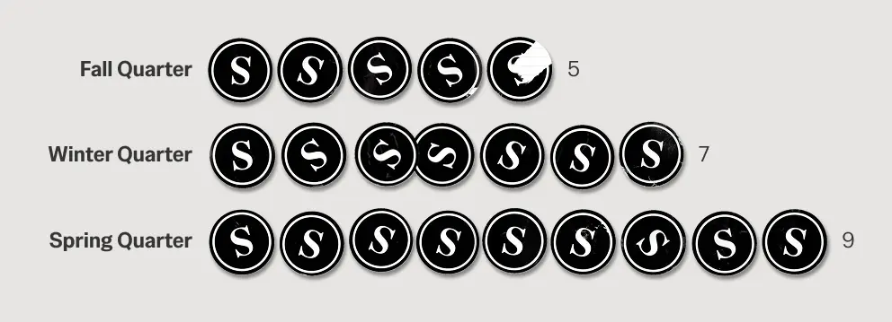
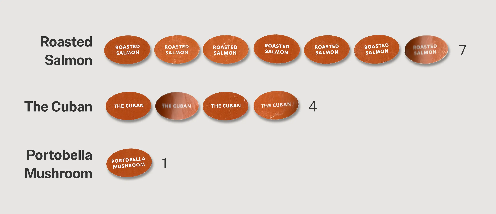

ophomore year of college taught me it’s easier to write when there’s already something on the page. It’s the year I finally got in the habit of journaling.
I’ve struggled to keep a consistent journal in the past. Last September, I found a cue for the habit: collecting stickers from my everyday college meals. Four of UCLA’s take-out dining locations package meals with custom stickers:
UCLA Dining Stickers
Example stickers across take-out locations

The Study
Bruin Cafe
Cafe 1919
The Drey
I liked their designs, and wanted to keep them in my journal as mementos. After eating, I’d keep the sticker on the back of my phone; a physical reminder to journal later. Each sticker I added to my journal held me accountable. With an itch to fill the remaining page, I’d log another written entry.
I placed most stickers in the top left
of a page, starting a journal entry
Sticker placement within journal pages

I never went more than six days without a dated journal entry sophomore year, excluding Winter Break. I’m grateful to have had an outlet to process such a pivotal and busy time in my life. I’ve filled one journal, and I’m currently making progress on a second.
I sought to analyze my college dining history through my sticker collection. Given the personal nature of the data, my lived experiences provide context and limitations to the analysis.
I’d say my take-out choices mostly came down to personal preference. I know where to go for certain cravings: bagels from the Study, paninis from Cafe 1919, and so on. I collected 39 take-out stickers in total:
I ate from The Study the most,
followed by Bruin Cafe
Distribution of stickers across take-out locations

I know the data’s a bit off; some take-out orders are sticker-less, like acai bowls from Bruin Cafe or gelato from Cafe 1919. Still, I’d say the sticker distribution reflects my overall preferences. For example, fewer visits to Cafe 1919 make sense, given how rich the paninis are. I received a duplicate panini sticker once, so the total visit count is actually one less:

Beyond preferences between dining locations, a location’s stickers over time reflect other choices in my dining history.
I ate from The Study more over time
Stickers from The Study across academic quarters

My Spring Quarter saw the highest number of visits to The Study, as my course schedule made me reliant on take-out meals. On Mondays and Wednesdays, I only had a 30-minute lunch break between classes. To avoid long lunch lines and the possibility of not eating at all, I’d order a meal from The Study in advance.
Dated journal entries also reveal another story—shifting food preferences over time.
The Roasted Salmon sandwich was
my go-to order from Bruin Cafe
Stickers across Bruin Cafe sandwich orders

It’s clear the Roasted Salmon sandwich dominated my sophomore year. Except, it wasn’t always this way; Bruin Cafe’s Cuban and Portobella Mushroom sandwiches were my go-to orders freshman year. This all changed when I was recommended the Roasted Salmon sandwich.
My journal provides a timeline of changing allegiances:
So that’s how the Roasted Salmon sandwich became my go-to order instead. I’m glad to have kept trying new foods in my second year of college dining.
Enough of Sandwich Olympics now. Reflecting on my journaling efforts overall, I usually just associated the habit with collecting dining stickers.
But after compiling the data, I found that I didn’t always need a dining sticker to journal.